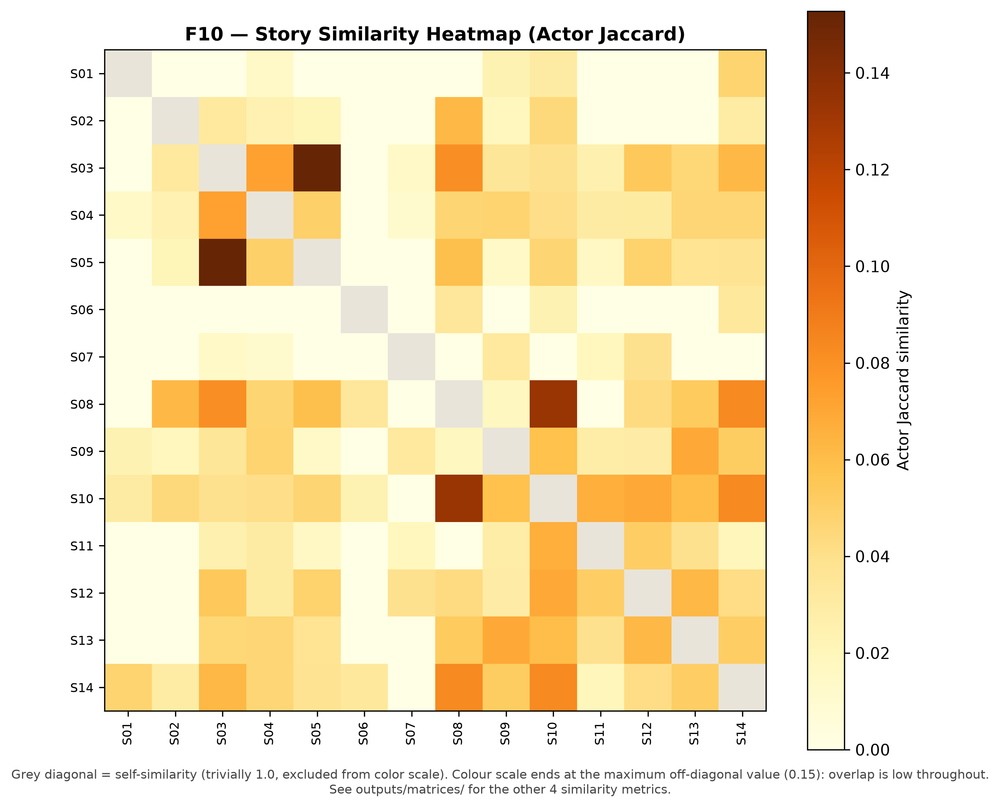
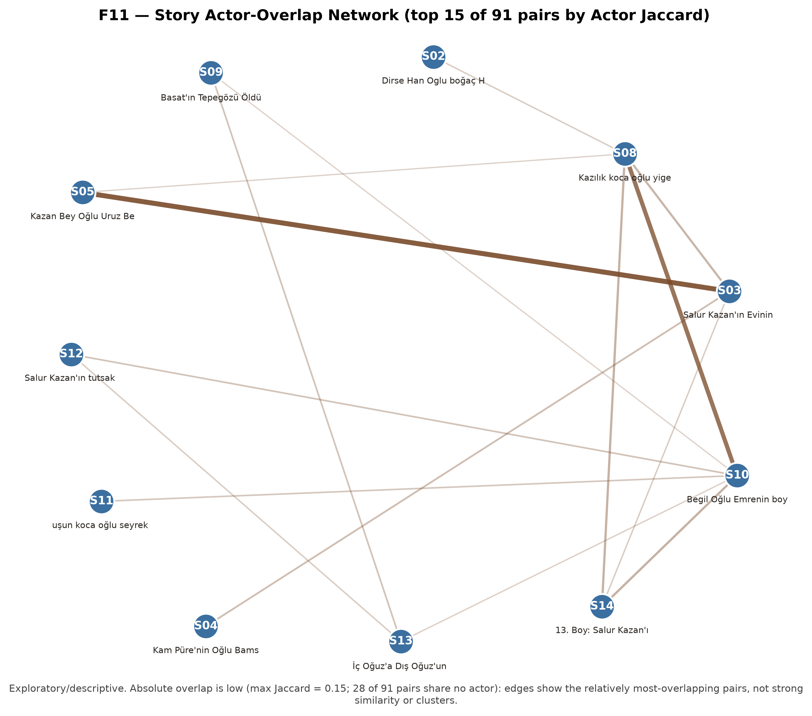

Story Similarity
Five similarity measures across all 91 story pairs: actor Jaccard, actor weighted Jaccard, actor cosine (all three based on shared characters), relation-profile similarity, and layer-composition similarity (both based on narrative-relational content, independent of which specific actors appear). Exploratory / descriptive. Story-level similarity can be quantified and visualized, but evidence for a robust discrete clustering structure is limited (see below). See Methodology and decision_log.md (DEC-014, DEC-015) for the exact definitions, the hierarchical-clustering feature-space choice, and the audit that narrowed the claims.
How to read these numbers
- Overlap is low. Actor Jaccard has a median of 0.030 and a maximum of 0.153; 28 of 91 pairs share no actor. “Top” below means relatively most overlapping among the evaluated stories, not strongly similar.
- The top pair depends on the metric. S03–S05 leads on the two Jaccard measures only; it ranks 6th, 6th and 7th of 91 on actor cosine, relation-profile and layer-composition cosine.
- Cosine values are high by construction (non-negative counts over a few categories). A permutation baseline (relations reassigned across stories) reaches nearly the same top values, so relation-profile and layer-composition similarities near 0.9 are not evidence of specific affinity.
- Clusters are not established. A Ward dendrogram always exists. Silhouette 0.37–0.56, bootstrap adjusted Rand index 0.54–0.79 and disagreement between linkage methods at k=4–5 do not support a robust discrete grouping (validity audit). Themes such as captivity are not coded variables, so they are not a finding of this analysis.
Actor Jaccard heatmap

Story actor-overlap network

Top 10 most-overlapping story pairs (by shared actors)
| story_a | story_b | actor_jaccard | actor_weighted_jaccard | actor_cosine | relation_profile_similarity | layer_composition_similarity |
|---|---|---|---|---|---|---|
| S03 | S05 | 0.1528 | 0.2215 | 0.6759 | 0.9414 | 0.9647 |
| S08 | S10 | 0.1333 | 0.0710 | 0.1438 | 0.6685 | 0.7712 |
| S08 | S14 | 0.0833 | 0.0811 | 0.0653 | 0.4642 | 0.6427 |
| S10 | S14 | 0.0833 | 0.0615 | 0.1342 | 0.2944 | 0.5756 |
| S03 | S08 | 0.0806 | 0.0345 | 0.0236 | 0.7462 | 0.7564 |
| S03 | S04 | 0.0727 | 0.0785 | 0.2459 | 0.7240 | 0.7810 |
| S10 | S12 | 0.0690 | 0.0244 | 0.0746 | 0.9528 | 0.9688 |
| S09 | S13 | 0.0690 | 0.0558 | 0.1492 | 0.8516 | 0.8651 |
| S10 | S11 | 0.0667 | 0.0273 | 0.0126 | 0.9245 | 0.9175 |
| S03 | S14 | 0.0625 | 0.1523 | 0.7181 | 0.5814 | 0.7741 |
Full pairwise table
All 91 pairs, all 5 metrics: T08_story_similarity.csv.
RQ6 status: partially answered / exploratory. These similarity values
are descriptive only — no significance test has been applied to them (unlike the community and
modularity findings on the Analysis page), and the cluster-validity
checks do not support a robust discrete clustering. Any thematic reading of a similar pair is
qualitative interpretation, not a network-analysis result.